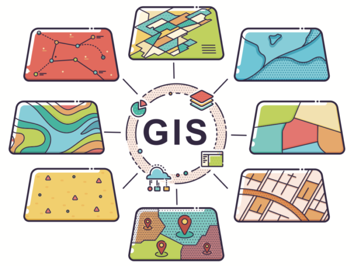

Data creation & management
Building and maintaining shapefiles, feature classes and file geodatabases, converting data between formats, and managing asset data and metadata across multiple projects in ArcGIS.
24.47° N, 39.61° E · Al Madinah
GIS Specialist
I support National Water Company (NWC) projects by turning field data into reliable maps, geodatabases and analysis for infrastructure teams.
Available for new opportunities

I'm a GIS specialist (analyst, mapping, developer) and expert land surveyor with a history of working in the infrastructure, construction and civil engineering industry, both in the field with survey tools and in the technical office.
I'm skilled in ArcGIS Pro, ArcGIS Online and AutoCAD Civil 3D, with good knowledge of programming for GIS and the web, and strong expertise in data management and analysis with Microsoft Office.
Building and maintaining shapefiles, feature classes and file geodatabases, converting data between formats, and managing asset data and metadata across multiple projects in ArcGIS.
Processing and analysing raster and vector data to support engineers, including querying, reporting, extracting spatial data and producing maps and charts.
Field surveying, setting out and as-built surveys with GPS, total station and level, with survey reports ready for consultant approval.
Project plans, shop drawings and as-built drawings in AutoCAD and Civil 3D, plus progress reports, handover documents and monthly invoices.
Al-Kuthban Engineering & Project Management Consultants
Technical support for asset data management services in the NWC Northwest Sector, GIS Department.
Alkhorayef Water & Power Technologies (AWPT)
Supply, installation, construction, testing and commissioning of DMA/DMZ chambers.
Sarh Alhaditha Co. for Contracting
Relocating utilities, building a wastewater treatment plant and pump station, installing valves and valve chambers, and delivering the electrical, mechanical and lighting systems for the plant site.
SATC, Al Sabq Al Arabi Trading & Contracting
Supervised and followed up the delivery of more than 1,200 domestic water connections across Jeddah.
SATC, Al Sabq Al Arabi Trading & Contracting
Engineering Company for Integrated Projects (ECIP)
Cairo Consulting Company
Knowing where things are, and why, is essential to rational decision making.
Tell me and I forget. Teach me and I remember. Involve me and I learn.
Faculty of Arts, Mansoura University, Egypt
2010 – 201417 courses from Esri Training and LinkedIn Learning. Swipe through them, tap one to view it full size, or verify it at the source.
Swipe or drag · use the arrow keys
Have a GIS, surveying or technical office role in mind? Send a message below, or reach me directly on WhatsApp, email or LinkedIn.